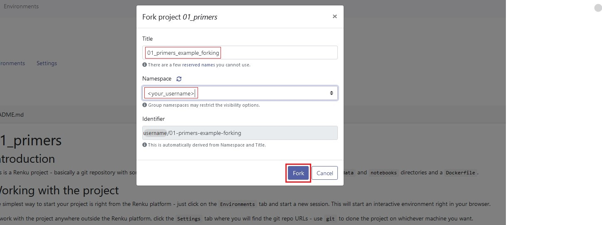
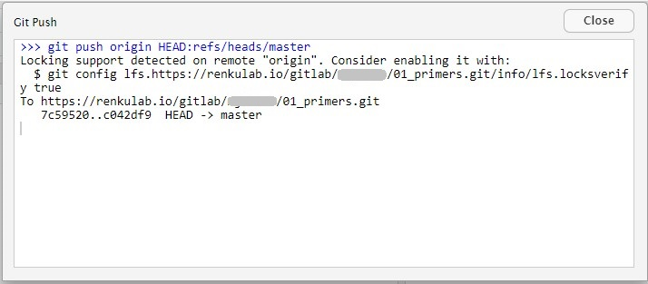
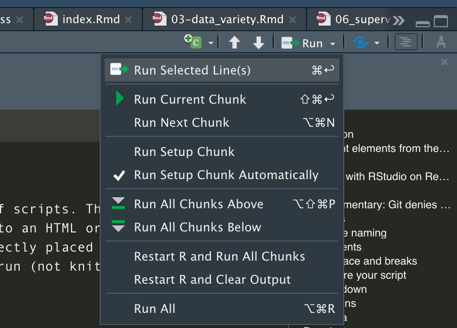
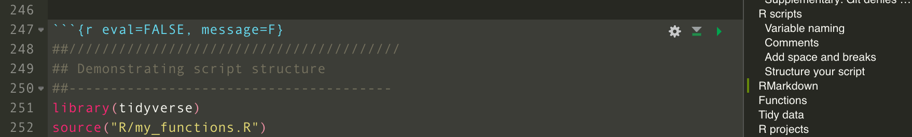
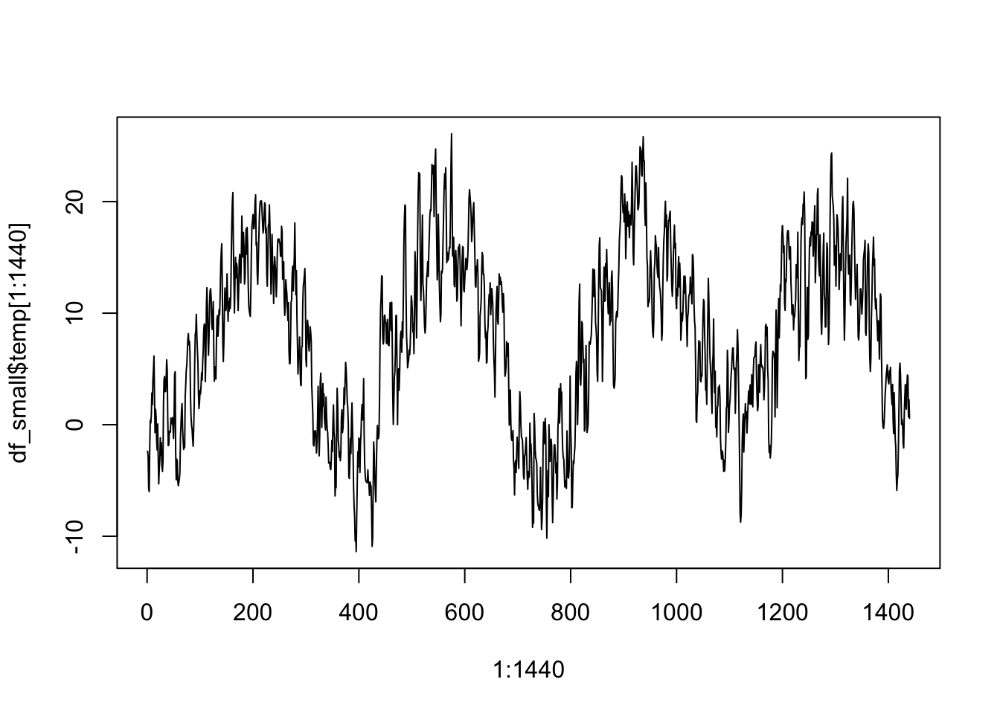
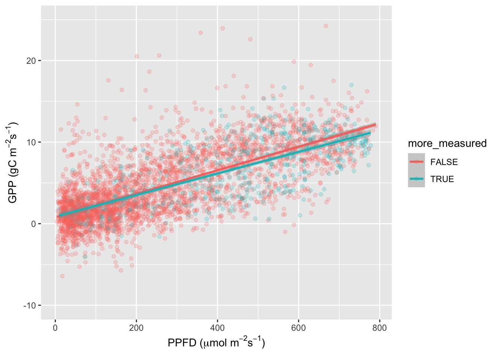
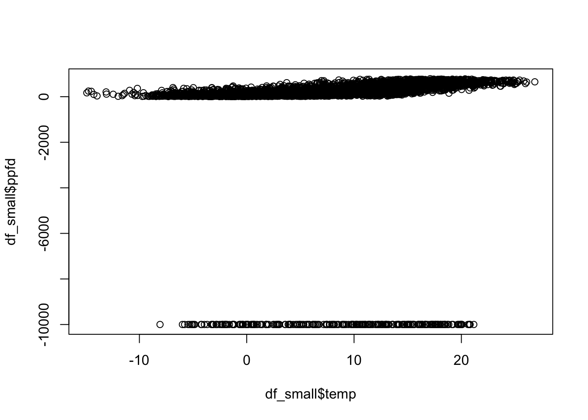

Chapter 1 Primers
1.1 Introduction
This tutorial gets you started to working with R and Git for a data science project. This chapter also includes some basics for programming in R (reading and writing data, types of objects, simple vizualisations). If you’ve had previous experience with R, you may skip this part.
After you’ve gone through the lecture and solved the exercises, you should be able to:
- Understand the definition of data science.
- Identify the different steps of a data science workflow.
- Recall a few typical examples of data science applications toward environmental problems.
- Explain what a system is and why system understanding is needed in environmental sciences.
- Define data, understand the structure of data, and list examples of environmental data.
- List sources of environmental data and explain the methodological difference in their collection.
- Execute R and load a dataset for data analyses.
- Apply basic Git commands for version control.
- Plot data analysis outputs and write them on the disk.
1.1.1 Key Points from the lecture
The four ‘Vs’ of Big Data:
- Volume: Data volume is simply the amount of data in a file or database.
- Velocity: Data velocity is the lag between time of observation and data ingest for analysis.
- Variety: Data variety is the diversity of data in a data collection or problem space.
- Veracity: Data veracity is the degree to which data is accurate and precise in comparison with a measured phenomenon
Open Science is enabled by the FAIR criteria for data use and sharing:
- Findable: Easy to find and well documented.
- Accessible: Long term storage and accessible with standard protocols.
- Interoperatable: Exchangeable and correctly cited.
- Reusable: Sufficiently documented and clear legal terms.
Environmental data is collected from a diversity of methods, including remote sensing, continuous site-scale measurements (e.g., meteorological variables, hydrological variables, ecosystem-atmosphere exchange fluxes of water vapour and CO2), episodic observations (e.g., forest inventories, biodiversity assessments), field campaigns, or experiments in the field or under laboratory conditions. Data from these sources come in different shapes and formats. In this course, we will learn to handle this diversity efficiently to answer research questions that you will likely encounter in the future. In many of the exercises, we will focus on data from continuous site scale observations, where meteorological variables are measured in parallel with ecosystem-atmosphere exchange fluxes of water vapour and CO2, collected by the eddy covariance technique. In addition, you will learn to tap into large environmental data repositories to complement your site-scale data.
At the end of each chapter, you will find an exercise that you can complete using the Renku cloud computing environment and the RStudio integrated development environment.
1.2 Tutorial
1.2.1 Working with RStudio on Renku
Cloud computing is becoming increasingly popular as it allows users to connect to the cloud system at any time from almost anywhere. This allows the bulk of features and files to be stored on a cloud-hosted server rather than on the users own computer. Renku is an open cloud computing platform that aims to make ‘Multidisciplinary Data Science Collaborations’ easier to navigate. It stores the data and code allowing multiple people to work on the same projects and keeps track of the various steps and versions of a project. By keeping track of the changes, there is a history and timeline of each persons contributions and results. Through Renku, its developers hope to make data science more reproducible, reusable and repeatable and hope to encourages and simplify collaborations.
RStudio on Renku is similar to using Rstudio on any laptop or computer, except it is hosted by the platform. Start by selecting the correct project in Renku.
Then press ‘fork’ to create a copy of the project, which serves as your personal project that you can modify.

Enter the title and namespace of the project and press ‘fork’ again.

This starts forking the project.

After the forking you are ready to start working on the project.

In the following will work with a fork simply called ‘01_primers’.
Once you forked the project, select the tab ‘Environments’ and click ‘New’ to start a new interactive environment.

Make sure to set the Default Environment to /rstudio. The other options can be left on the default settings. The box commit will show you when the latest commit was pushed and who authored it.
Press Start environment.
 This starts loading the environment and can take a while. Once it is ready (signalised by a green tick within a white circle), click Connect.
This starts loading the environment and can take a while. Once it is ready (signalised by a green tick within a white circle), click Connect.
 An online RStudio interface will open in a new browser tab.
Once RStudio is running, it works as on a laptop or computer. Saving the files will differs when using RStudio on Renku, this will be explained in the section below called Git.
An online RStudio interface will open in a new browser tab.
Once RStudio is running, it works as on a laptop or computer. Saving the files will differs when using RStudio on Renku, this will be explained in the section below called Git.
Once your progress has been saved an active environment can be closed by clicking on the three dots next to the connect button back on the Renku page and then selecting Stop. Do this before logging out of and closing Renku.

1.2.2 Git
Git is a program for code version control and managing collaborative code development. The basic unit of a Git project is a repository, which usually contains multiple source code files that may be organised in (sub) directories. Git keeps track of the entire history of a repository in steps of commits. A commit is a “bundle” of multiple edits and additions of new files and is specified by the user. Since Git knows the entire history of all the files that have ever been added or removed to and from a repository, it allows you to recover previous versions of files (previous commits) and track changes between them. Git also allows you to have multiple versions of your repository (branches) for parallel developments on the same code base, but we will not use this feature. Since Git stores the entire history, the content of a Git repository should always be kept light. For example, it is advisable to only add code and other (small, <10 MB) plain text files to a repository, but not data, and no other outputs that is created by the code of the repository.
A Git repository exists locally, that is, on your computer. But the power of Git plays out when your local repository has a counterpart in the cloud, for example on GitHub, or on ETH’s GitLab. Git lets you push (upload) your commits to your repository’s remote copy, and pull (download) changes that have been uploaded by your collaborator(s) or yourself from a different clone (local copy) of your repository.
1.2.2.1 Git commands in RStudio
Unless Git has been installed on a laptop and connected to RStudio, the Git features in Renkus RStudio will not be visible to a user. We will now introduce you to the main commands you will need to make use of Git.
To save your work you will want to commit it. A commit saves the current version of the file or project you are working on. By continually adding commits you will get a timeline of your project as it develops. All commits are saved to the local repository or environment.
To commit, click one of the two commit button or press Ctr + Alt + M.

RStudio will open up a new window, showing changes to the selected file, the history and a box where you can add a commit message. The commit message is a way to explain what has been changed in the file since the last commit.
Under the section Status each file with either have a yellow box with a ? for ‘unkown’ files , a blue box containing an M for ‘modified’ or a green box containing an A for ‘added’. Added mean the file is ready to be commited.
The box in the column Staged must be ticked for the file to be committed. Then click Commit.

If it worked, a message such as the following will appear:

Remember, this file is still only saved to the local repository or environment. RStudio shows the user this with a little message:

To upload it to the remote repository, we will need to push it. To do this click either Push Branch or Push to the right of the green arrows facing up. With this command, we upload our changes to the remote Git repository, e.g. on GitHub or GitLab.

If the push is successful, the little information saying the branch is ahead will have disappeared and a message such as the following appears. 
It is good practice to commit and push any changes before you interrupt your work or finish a session. Else those changes will be lost. Renku has an autosave function in case you forget but it can lead to conflicts when picking up your work again.
Once you start your work again, either stop the environment in which you are working within Renku and open a new one or start the next session the blue arrow in the Git tab that says Pull. As its name suggests, with it we can pull changes in our document from the Git repository. This might seem like an unnecessary step, when you are working alone on the document. However, in projects where you might be working together with a peer and need to make sure you integrate her/his changes as well. If you are working together, make sure, that you do not work on the same document at the same time, which could lead to merge conflicts. If at some point you encounter a merge conflict that Git cannot resolve automatically you will have to do so manually. At the end of this tutorial we show how this is done. However, it is unlikely that you will encounter such a problem in this course, which is why we do not explain it here.
1.2.3 Libraries
This tutorial uses a set of libraries. Libraries provide a set of functions and/or other objects targeted for specific applications and are not available through base R. To run commands of this tutorial, make sure to install and load all packages on your computer. This can be done by:
list_pkgs <- c("tidyverse")
new_pkgs <- list_pkgs[!(list_pkgs %in% installed.packages()[, "Package"])]
if (length(new_pkgs) > 0) install.packages(new_pkgs)
library(tidyverse)In each chapter of this tutorial, you’ll find a similar statement to specify which package the respective chapter’s tutorial will use and to install them if not available.
1.2.4 R scripts
A single statement can be entered in the R console. For example, to calculate the mean of 1, 2, and 3, we enter:
mean(c(1,2,3))## [1] 2The output of a statement can be saved as a new object:
my_new_object <- mean(c(1,2,3))The value of an object can be accessed or printed by referring to its name:
my_new_object## [1] 2You will learn more about different types of objects in R further below. The set of objects defined during an R session are referred to as the environment.
Usually, multiple statements are needed to get, e.g., from reading data into R to final numbers and figures that make up a further analysis. Together, these multiple statments constitute a workflow. It is essential that all workflows that underlie results of publications are reproducible.
After closing an existing R session (e.g. after quitting RStudio), the environment defined by the user during that session, will not be saved automatically and will be lost. To make a workflow reproducible, the sequence of statements that you needed to carry out your analysis and produce outputs can be saved as an R script. Instead of saving the environment, we should save the steps (i.e. the script) to reproduce the same environment - starting from reading in the (raw) data. This will be the objective of an exercise at the end of this session.
An R script is basically a text file, named with the suffix .R to indicate that it is executable by R. Executing the script is running each statement, line-by-line, starting from the top, and can be done in R by:
source("my_r_script.R")You can find more useful information about scripts and workflows in R for Data Science (Hadley Wickham and Grolemund 2017).
We should always strive to write nice scripts and good code. Good code is clean, readable, consistent, and extensible (easily modified or adapted). To achieve this, here are a few points to consider - inspired by best practices for coding and by the Tidyverse style guide (Hadley Wickham, n.d.).
1.2.4.1 Variable naming
It is preferable to use concise and descriptive variable names. Different variable naming styles are being used. In this course, we use lowercase letters, and underscores (_) to separate words within a name (_). Avoid (.) as they are reserved for S3 objects (base R). Also, you should avoid naming your objects with names of common functions and variables since your re-definition will mask already defined object names.
For example, df_daily is a data frame with data at a daily resolution. Or clean_daily is a function that cleans daily data. Note that a verb is used as a name for a function and an underscore (_) is used to separate words.
It is also recommendable, to avoid variable names consisting of only one character. This makes it practically impossible to search for that variable.
# Good
day_01
# Bad
DayOne
day.one
first_day_of_the_month
djm1
# Very bad
mean <- function(x) sum(x)/length(x) # mean() itself is already a function
T <- FALSE # T is an abbreviation of TRUE
c <- 10 # c() is used to create a vector (example <- c(1, 2, 3))1.2.4.3 Add spaces and breaks
Adding enough white spaces and line breakes in the right locations greatly helps the legibility of any code. Cramping it up too much leads to an unintelligible sequence of characters and it will not be clear what parts go together (operators, variable names, brackets). Therefore, consider the following points:
- Use spaces around operators (
=,+,-,<-,>, etc.). - Use
<-, not=, for allocating a value to a variable. - An opening curly bracket (
{) should be followed by a line break and never stand alone on a line. A closing curly bracket (}) should stand alone on a line unless followed byelse. - Code inside curly brackets should be indented (recommended: two white spaces at the beginning of each line for each indentation level - don’t use tabs).
For example, well written code looks like this:
if (temp > 5.0){
growth_temp <- growth_temp + temp
}1.2.4.4 Structure your script
At the beginning of each file add a header as a fully commented text section, describing what the code contains, and how it fits into the larger analysis framework.
Note that Git stores all meta information about the file, including who created it, who modified it and when. This information should not be added to the header. Then, load all libraries needed within the script. Then, source any scripts and load data, and only then, start with the sequence of statements. To visually separate parts, break up your code using, commented lines.
For example, a script could look like this:
##////////////////////////////////////////
## Demonstrating script structure
##---------------------------------------
library(tidyverse)
source("R/my_functions.R")
my_df <- read_csv("data/my_df.csv")
##---------------------------------------
## Main part
##---------------------------------------
## convert units
my_df$temp <- my_df$temp + 273.15 # deg C -> K
##---------------------------------------
## Writing output
##---------------------------------------
filn <- "data/my_df_kelvin.csv"
print(paste("Writing file", filn, "..."))
write_csv(my_df, filn)1.2.5 RMarkdown
RMarkdown files are an enhanced version of scripts. They combine formatted text and executable code chunks. They can either be compiled (knitted) into an HTML or PDF output, where code chunks are executed upon compilation and visualization outputs are directly placed into the output, or they can be run like a script entirely or each code chunk separately. When run (not knitted), objects defined by the executed code are available in the environment.
Text can be formatted using the Markdown syntax. For example, a top-level section title is specified by # and a title of a section one level lower by ##.
RMarkdown documents are also the basis of this book, with each chapter written in a separate RMarkdown file. This lets you use the book in an interactive fashion.
When opened in RStudio, you can knit an RMarkdown document by clicking the “Knit” button:

You can run all chunks by selecting clicking “Run All” from the drop-down menu available under “Run”:

Individual chunks can be executed by clicking the green right-pointing triangle in the upper right corner of the chunk:

1.2.6 Functions
Often, analyses require many steps and your scripts may get excessively long. Over 2000 lines of code in one file are hard to digest. An important aspect of good programming is to avoid duplicating code. If the same sequence of multiple statements or functions are to be applied repeatedly to different objects, then it is usually advisable to bundle them into a new function and apply this single function to each object. This also has the advantage that if some requirement or variable name changes, it has to be edited only in one place. A further advantage of writing functions is that you can give the function an intuitively understandable name, so that your code reads like a sequence of orders given to a human,
For example, the following code, converting temperature values provided in Fahrenheit to degrees Celsius, could be made into a function.
## NOT ADVISABLE
temp_soil <- (temp_soil - 32) * 5 / 9
temp_air <- (temp_air - 32) * 5 / 9
temp_leaf <- (temp_leaf - 32) * 5 / 9The same, but using our own function convert_fahrenheit_to_celsius():
## ADVISABLE
convert_fahrenheit_to_celsius <- function(temp_f){
temp_c <- (temp_f - 32) * 5 / 9
}
temp_soil <- convert_fahrenheit_to_celsius(temp_soil)
temp_air <- convert_fahrenheit_to_celsius(temp_air)
temp_leaf <- convert_fahrenheit_to_celsius(temp_leaf)Functions (particularly long ones) can be written to separate source file (text files containing executable code).
1.2.7 Tidy data
Similarly as code, data can be tidy or not. Even if a data file (for example an Excel spreadsheet) may look visually appealing, its structure determines how easy it is to perform further processing steps and calculations on it. The concept of tidy data (Hadley Wickham and Grolemund 2017) can be defined by the following rules (Hadley Wickham 2014) (http://www.jstatsoft.org/v59/i10/paper):
- Each column is a variable.
- Each row is an observation.
- Each value has its own cell.
(Hadley Wickham and Grolemund 2017)

Having data in a tidy format greatly facilitates all steps of data wrangling. When creating a spreadsheet, remember to design it in a tidy structure from the beginning. For example, put variable names in the first row, avoid merged cells, create separate tabs for each table, and make it machine readable. For example, avoid entries like “>10 g m-2 s-1”. A cell should only contain one value. Here, this is “10”. Create a separate column for units, and enter the information there as a character string (“g m-2 s-1”). The information conveyed by the greater-than (“>”) symbol should be encoded in a machine readable manner. This may not be straight forward. A possibility could be to add a column “is_minimum” and add the entry “TRUE” in the respective cell.
The concept of tidy data can even be taken further by understanding a “value” as any object type, e.g. a list. This leads to a list “nested” within a data frame. You will learn more about this in Chapter 2.
In the exercises at the end of this chapter, you will transform a visually appealing but poorly formatted data file into tidy and machine readable data.
1.2.8 R projects
Using R projects in combination with Git is the essence of efficient workspace management in R. All files that belong together are organised within one directory. This can be regarded as the project directory and is typically congruent with what belongs to the respective Git repository. When working in RStudio, you can create a new R project or switch to an existing project by navigating the drop-down menu in the top right corner of RStudio.

When starting a new project, a file <project_name.Rproj> is created. It sits in the project directory and stores information about your last session (settings, open files, etc.) and optionally (not recommended) the environment of that session. The use of R projects also automatically enables useful features in RStudio for easy package, website, or book building and lets you manage Git for the repository corresponding to the project.
It’s advisable to write files, created by the code of your project, to sub-directories within the project directory. For example, keep source files where R functions are defined in ./R (where . refers to the project directory), data files in ./data and visualizations in ./fig. To read and write from/to files should be done using relative paths:
source("./R/my_r_script.R")or equivalently:
source("R/my_r_script.R")A project directory should only contain code and outputs that belong to this one project. Stuff that may belong to multiple projects should be kept somewhere else. For example, keep original data (e.g., the raw data files that you created when collecting the data in the field, or data files you downloaded from the web) outside the project directory.
It is advisable to create a separate data directory outside (e.g., ~/data/) that holds all the original data you ever downloaded, or obtained from peers, or gathered yourself. Within such a data directory, you can put files from different sources into separate sub-directories and add a description file (e.g., ~/data/some_data_source/README) defining who, from where and when the data was obtained and defining data use policy.
1.2.9 Working with data frames
Now, let’s get our hands on actual data for demonstrating how data is read and written. As most of the code displayed in this book, the code chunks below are executable. You can try it out by opening the the book’s R project in RStudio.
We are going to work with data from ecosystem flux measurements, taken by the eddy covariance technique, and provided as part of the FLUXNET2015 dataset (Pastorello et al. 2020) see. The data we’re using below comes from a flux tower near Zürich (CH-Lae, located on the Laegern mountain between Regensberg and Baden and run by our colleagues here at ETH).
The data is stored as a Comma Separated Values file (.csv). This is a plain-text, and therefore a non-proprietary format. To follow the FAIR data principles, distribute your data in a format that is non-proprietary and readable across platforms and applications. For example, avoid distributing your data as an Excel spreadsheat (.xlsx), or a Matlab data object (.mat), or an R data object (.RData, or .rds).
1.2.9.1 Reading data
To import the data into the R workspace (environment), we use the function read_csv() from the tidyverse package. In other R code, you will also encounter the base R read.csv() function. However, read_csv() is much faster and reads data into a tidyverse-data frame (a tibble) which has some useful additional characteristics, on top of a common R data frame. To tell the function where the data is located, pass the data’s path as an argument. You can either use an absolute path, starting from C:/ on a Windows computer or ~/ on a Mac or Linux. Or, alternatively, you can provide a relative path, where ./ points to the present working directory and ../ is one level up, or ../../ is two levels up, etc.
# use a relative path to read the data
df <- read_csv("./data/FLX_CH-Lae_FLUXNET2015_FULLSET_DD_2004-2014_1-3.csv")
print(df) # to print an overview of the data frame## # A tibble: 4,018 × 334
## TIMESTAMP TA_F_MDS TA_F_MDS_QC TA_F_MDS_NIGHT TA_F_MDS_NIGHT_SD
## <dbl> <dbl> <dbl> <dbl> <dbl>
## 1 20040101 -9999 -9999 -9999 -9999
## 2 20040102 -9999 -9999 -9999 -9999
## 3 20040103 -9999 -9999 -9999 -9999
## 4 20040104 -9999 -9999 -9999 -9999
## 5 20040105 -9999 -9999 -9999 -9999
## 6 20040106 -9999 -9999 -9999 -9999
## 7 20040107 -9999 -9999 -9999 -9999
## 8 20040108 -9999 -9999 -9999 -9999
## 9 20040109 -9999 -9999 -9999 -9999
## 10 20040110 -9999 -9999 -9999 -9999
## # … with 4,008 more rows, and 329 more variables: TA_F_MDS_NIGHT_QC <dbl>,
## # TA_F_MDS_DAY <dbl>, TA_F_MDS_DAY_SD <dbl>, TA_F_MDS_DAY_QC <dbl>,
## # TA_ERA <dbl>, TA_ERA_NIGHT <dbl>, TA_ERA_NIGHT_SD <dbl>, TA_ERA_DAY <dbl>,
## # TA_ERA_DAY_SD <dbl>, TA_F <dbl>, TA_F_QC <dbl>, TA_F_NIGHT <dbl>,
## # TA_F_NIGHT_SD <dbl>, TA_F_NIGHT_QC <dbl>, TA_F_DAY <dbl>,
## # TA_F_DAY_SD <dbl>, TA_F_DAY_QC <dbl>, SW_IN_POT <dbl>, SW_IN_F_MDS <dbl>,
## # SW_IN_F_MDS_QC <dbl>, SW_IN_ERA <dbl>, SW_IN_F <dbl>, SW_IN_F_QC <dbl>, …The file is automatically machine-readable because we have:
- Only one header row, containing the column (variable) names.
- Variables organised by columns, and observations by rows.
- Each column consists of a single data type (e.g., character, numeric, logical; see below for more info) - Here, all columns are interpreted as numeric (`
’). - One value per cell.
- No merged cells.
In short, the data frame is tidy.
To understand the sort of object we work with, i.e. the class, we can do:
class(df)## [1] "spec_tbl_df" "tbl_df" "tbl" "data.frame"Fundamentally, df is a data.frame. In addition, it is also of some other classes (spec_tbl_df","tbl_df", "tbl") which gives it additional features.
1.2.9.2 Understanding the data structure
There are several base R functions to help you understand the structure of a data frame. Here is a non-exhaustive list of of them:
- Size
dim()- Returns the size of the dimensions of an object (here: number of rows and columns).nrow()- Returns the number of rows of an object.ncol()- Returns the number of columns of an object.
- Content
head()- Returns the first 6 rows.tail()- Returns the last 6 rows.View()- look at the entire data set in the form of a table (It is not supported by the Jupyter environment. In RStudio however, it works).
- Names
names()- Returns the column names (fordata.frame-objects it is synonymous tocolnames()).rownames()- Returns the row names.
- Summary
class()- Returns the class of an object.str()- Returns the structure of an object and information about the class, length and content of each column.summary()- Returns generic statistics information, depending on the class of the object.
For example, the data frame df has 4018 rows and 334 columns:
dim(df)## [1] 4018 334A description of standardized FLUXNET data variables is available here. A selection of available variables that we will use in subsequent chapters are:
GPP(gC m\(^{−2}\) s\(^{-1}\)): Gross primary productionWS(m s\(^{-1}\)): horizontal wind speedUSTAR(m s\(^{-1}\)): friction velocityTA(deg C): air temperatureRH(%): relative humidity (range 0–100%)PA(kPa): atmospheric pressureG(W m\(^{−2}\)): ground heat flux, not mandatory, but needed for the energy balance closure calculationsNETRAD(W m\(^{−2}\)): net radiation, not mandatory, but needed for the energy balance closure calculationsSW_IN(W m\(^{−2}\)): incoming shortwave radiationSW_IN_POT(W m\(^−2\)): potential incoming shortwave radiation (top of atmosphere theoretical maximum radiation)PPFD_IN(\(\mu\)mol photons m\(^{−2}\) s\(^{-1}\)): incoming photosynthetic photon flux densityP(mm): precipitation total of each 30 or 60 minute periodLW_IN(W m\(^{−2}\)): incoming (down-welling) longwave radiationSWC(%): soil water content (volumetric), range 0–100%TS(deg C): soil temperatureCO2(\(\mu\)molCO2 mol\(^{-1}\)): Carbon Dioxide (CO\(_2\)) mole fraction in moist air
1.2.9.3 Selecting data and entering the tidyverse
df is a data frame. This is similar to a matrix and has two dimensions (rows and columns). If we want to extract specific data from it, we specify the indices, i.e. the “coordinates”, of the data. For two-dimensional objects (data frames, matrices), the first index refers to rows and the second to columns. For example, to refer to the element on the third row in the first column, we write:
df[3,1]## # A tibble: 1 × 1
## TIMESTAMP
## <dbl>
## 1 20040103Reducing a data frame (tibble) to only the first columns can be done by:
df[, 1]## # A tibble: 4,018 × 1
## TIMESTAMP
## <dbl>
## 1 20040101
## 2 20040102
## 3 20040103
## 4 20040104
## 5 20040105
## 6 20040106
## 7 20040107
## 8 20040108
## 9 20040109
## 10 20040110
## # … with 4,008 more rowsThe method of selecting parts of a data frame by index is quite flexible. For example, we may require the information in the third column for the first three rows. Putting a colon between two numbers, e.g. [1:3,], indicates we want to select the rows numbers starting at the first and ending with the second number. So here [1:3,] will give us rows one, two and three.
df[1:3, 3] # reduces the data frame (tibble) to its first three rows and the 3rd column## # A tibble: 3 × 1
## TA_F_MDS_QC
## <dbl>
## 1 -9999
## 2 -9999
## 3 -9999To reduce the data frame (tibble) to several columns, the function c() is used. c() stands for concatenate, which means to link together in a series or chain. This outputs the data frame (tibble) reduced to the selected row or column numbers inside c().
df[, c(1,4,7)]## # A tibble: 4,018 × 3
## TIMESTAMP TA_F_MDS_NIGHT TA_F_MDS_DAY
## <dbl> <dbl> <dbl>
## 1 20040101 -9999 -9999
## 2 20040102 -9999 -9999
## 3 20040103 -9999 -9999
## 4 20040104 -9999 -9999
## 5 20040105 -9999 -9999
## 6 20040106 -9999 -9999
## 7 20040107 -9999 -9999
## 8 20040108 -9999 -9999
## 9 20040109 -9999 -9999
## 10 20040110 -9999 -9999
## # … with 4,008 more rowsAnother method is to select the columns by column names, i.e. giving as input a string vector with the name of each column we want to select (again, this is Base R notation). This is especially useful if the columns we want to select are not contiguous. For example:
# Selecting data by name in base R ================================
df[,c("TIMESTAMP", "TA_F_MDS", "TA_F_MDS_QC")]## # A tibble: 4,018 × 3
## TIMESTAMP TA_F_MDS TA_F_MDS_QC
## <dbl> <dbl> <dbl>
## 1 20040101 -9999 -9999
## 2 20040102 -9999 -9999
## 3 20040103 -9999 -9999
## 4 20040104 -9999 -9999
## 5 20040105 -9999 -9999
## 6 20040106 -9999 -9999
## 7 20040107 -9999 -9999
## 8 20040108 -9999 -9999
## 9 20040109 -9999 -9999
## 10 20040110 -9999 -9999
## # … with 4,008 more rowsIn Chapter 2 of this tutorial tutorial, we will use the tidyverse, which is a set of R packages designed for working with tidy data and writing code in such a way as to emphasize and better understand the “workflow aspect” of it. A code chunk which does the same as above, but is written for the tidyverse can read as follows.
select(df, 1) # reduces the data frame (tibble) to its first column## # A tibble: 4,018 × 1
## TIMESTAMP
## <dbl>
## 1 20040101
## 2 20040102
## 3 20040103
## 4 20040104
## 5 20040105
## 6 20040106
## 7 20040107
## 8 20040108
## 9 20040109
## 10 20040110
## # … with 4,008 more rowsselect(df, TIMESTAMP, TA_F_MDS, TA_F_MDS_QC) # reduces the data frame to columns specified by names## # A tibble: 4,018 × 3
## TIMESTAMP TA_F_MDS TA_F_MDS_QC
## <dbl> <dbl> <dbl>
## 1 20040101 -9999 -9999
## 2 20040102 -9999 -9999
## 3 20040103 -9999 -9999
## 4 20040104 -9999 -9999
## 5 20040105 -9999 -9999
## 6 20040106 -9999 -9999
## 7 20040107 -9999 -9999
## 8 20040108 -9999 -9999
## 9 20040109 -9999 -9999
## 10 20040110 -9999 -9999
## # … with 4,008 more rowsAs a further shortcut in tidyverse, we can use the pipe %>% operator. The data frame is still reduced to its first column:
df %>% select(1)## # A tibble: 4,018 × 1
## TIMESTAMP
## <dbl>
## 1 20040101
## 2 20040102
## 3 20040103
## 4 20040104
## 5 20040105
## 6 20040106
## 7 20040107
## 8 20040108
## 9 20040109
## 10 20040110
## # … with 4,008 more rowsWe pipe the object df into the select() function with argument 1. Note that the %>% operator can be used on any function. It tells the function to interpret what’s coming from the left of %>% as its first argument.
For the remainder of the tutorial several variables will be required. The methods of variable selection demonstrated above will be utilised below to get the desired variables.
df_small <- df %>%
select(TIMESTAMP, TA_F, PPFD_IN)Note: In the code above, an indentation was used to highlight which parts go together and make the code easy to understand. Indentations and line breaks take no effect in R per se (unlike in other programming languages, e.g., Matlab, Python), but help to make the code easier to read.
1.2.9.4 Renaming
TIMESTAMP_START, TA_F and PPFD_IN as variable names may be hard to remember and in this section you will have to type them a lot. Therefore we change their names to something more intelligle.
df_small <- df_small %>%
rename(time = TIMESTAMP, temp = TA_F, ppfd = PPFD_IN)1.2.9.5 Writing data
A data frame can be written to a CSV file by:
write_csv(df_small, path = "data/df_small.csv")The function saveRDS() allows you save individual objects of any form (not just a data frame). saveRDS() creates a binary file that is fast to write and read, but only intelligible to R. Such files are commonly identified by the suffix .rds. It is recommended to name the .rds files according to the single object they contain. For example:
saveRDS(temp_sum, file = "data/temp_sum.rds")This file can then be read into the R workspace. Sometimes, it is useful to give it a new name, e.g.:
temp_sum <- readRDS("data/temp_sum.rds")Note that making a file publicly available as a .rds file violates the FAIR principles. It is not interoperable. Therefore, whenever possible, save your data in a format that is readable across platforms without requiring proprietary software. Hence use write_csv() whenever possible. We will encounter other non-proprietary formats that let you save and share more complex data structures in chapter 2.
1.2.10 R objects
Each object in R is of a certain class, specifying some attributes and how functions act upon it. The most basic classes are:
numeric. any number (except complex numbers) -> 2.375integer(int) - integer numbers -> 2character(chr) - any string -> “fluxes”logical(logi) - boolean -> TRUE FALSEfactor(Factor) - categorical data, the variable can only be one of a defined amount of options -> female/male/otherfunction(function) - a set of statements organized to perform a specific task -> sum()
1.2.10.1 Data frames
We have learned that the object df is a data frame. That is, it is of class "data.frame". You can think of a data frame as a table. Columns need to be of the same length and all values in a column need to be of the same data type.
The most common data types in R are:
However, there are many more data types. For now, we will mainly consider those mentioned above.
1.2.10.2 Vectors and classes
The contents of a data frame column is a vector. It can be “extracted” from its data frame by pull. Next, we are going to extract the values of the column temp and return the class of the entries in this vector. This type of sequence of commands (actually, a small workflow) can be implemented as a sequence of pipes:
df_small %>%
pull(temp) %>%
class()## [1] "numeric"Sometimes you need to convert a numeric number into a character. The following takes only the first row of the data frame fluxes_subset using the slice() function with argument 1 (for the first row), extracts the single temperature value, converts it to an integer, and then to a character:
df_small %>%
slice(1) %>%
pull(temp) %>%
as.integer() %>%
as.character()## [1] "-2"You notice that now the values are in quotes ““. R interprets them as a text and you will not be able to do any numeric calculations with them anymore.
Writing each function command on a separate line, connected with the pipe operator %>%, allows for good readability of the entire workflow. Note that in R, a line break has no effect. Compare the above sequence of pipes to the following equivalent part of the code to understand the advantage of the tidyverse syntax:
as.character(as.integer(df_small[1,"temp"]))## [1] "-2"Arguably, a sequence of pipes is more easily legible than a complex nesting of brackets.
An object of class logical can only be TRUE or FALSE. If I ask which temperatures < 0 for example, R will return a vector of class logical.
temperatures <- df_small %>%
slice(1:10) %>%
pull(temp)
temperatures < 0## [1] TRUE TRUE TRUE TRUE TRUE FALSE FALSE FALSE FALSE FALSEIndeed, the first 10 temperature values are all below freezing.
1.2.10.3 Lists
Lists are extremely flexible. They allow us to store different types of data, even if they are of different lengths. Here is an example where each element of the list is named.
mylist <- list(
temperatures = c(2.234, 1.987, 4.345),
my_favourite_function = mean,
best_course = "Environmental Systems Data Science"
)Similar to data frames, we can extract elements from lists, either by index [[1]] or by the name [["temperatures"]]. Note the double [[]] here, indicating an element of a list as opposed to [] indicating an element of a vector. To get the entire vector of temperatures, do either of the two:
mylist[[1]]## [1] 2.234 1.987 4.345mylist[["temperatures"]]## [1] 2.234 1.987 4.345And to get the first temperature value:
mylist[["temperatures"]][1]## [1] 2.234You can also append elements to the list (either way is possible):
mylist[["my_second_favourite_function"]] <- median
mylist$my_second_favourite_function <- medianCheckpoint
In mylist, we have saved a function called my_favourite_function and a numeric vector called temperatures. Use the function stored in the list and apply it on the vector temperatures, stored in the same list. Add the result in the list as a new variable and call it mean_temperature. The mean temperature should be equal to 2.85533333333333.
Solution
mylist$mean_temperature <- mylist[["my_favourite_function"]](mylist[["temperatures"]])
mylist$mean_temperature## [1] 2.855333This was a very condensed introduction to vectors and lists. A more complete introduction is given here.
1.2.11 Data visualisation
Visualising data is an integral part of any data science workflow. In this chapter, we introduce just the very basics. In later chapters, you will get introduced to additional methods for visualising data. Our data frame fluxes_subset contains three variables, one of which is time. In other words, we are dealing with a time series. Let’s look at the temporal course of temperature in the first 1440 time steps (corresponding to 30 days) as a line plot (type = "l").
plot(1:1440, df_small$temp[1:1440], type = "l") 
Another useful way of looking, not at a temporal course, but rather at the distribution of your data, is to display a histogram. A histogram visualises the frequency or proportion of data that has a metric value that falls within a certain interval known as a ‘bin’. Below you will see the temperature on the x-axis split into these ‘bins’ ranging across 2°. The number of times a data point falls between say 2° to 4° is then tallied and displayed as the frequency on the y-axis. Here there are around 1500 temperature values between 2° and 4°.
hist(df_small$temp, xlab = "Temperature (°C)")
Plots can be saved as files, as long as the file size does not get too large.It will write vector graphics as outputs, i.e. PDF. In base-R, this can be done by:
pdf("./figures/filename.pdf")
hist(df_small$temp)Checkpoint
Create a scatter-plot (points) of temperature versus the incoming photosynthetic photon flux density using all data points in df_small. Can this plot intuitively be interpreted?
Solution
plot(df_small$temp, df_small$ppfd)
1.2.12 Conditionals
In cases where certain statements are executed or not, depending on a criterion, we can use conditional statements if, else if, and else. Conditionals are an essential feature of programming and available in all languages. The R syntax for conditionals looks like this:
if (temp < 0.0){
is_frozen <- TRUE
} else {
is_frozen <- FALSE
}The evaluation of the criterion (here (temp < 0.0)) has to return either TRUE or FALSE.
1.2.13 Loops
Loops are another essential essential feature of programming. for and while loops exist in probably all programming languages. We introduce them here because they provide an essential and powerful functionality for solving many common tasks. You will encounter them later again (see Chapter 5.
for and while loops let us repeatedly execute the same set of commands, while changing an index, or counter variable to take a sequence of different values. The following example calculates a temperature sum of the first ten values, by iteratively adding them together. Of course, this is equivalent to just using the sum() function.
temp_sum <- 0
for (i in 1:10){
temp_sum <- temp_sum + df_small$temp[i]
}
print(temp_sum)## [1] -12.97print(sum(df_small$temp[1:10]))## [1] -12.97Instead of directly telling R how many iterations it should do we can also define a condition. As long as the condition is TRUE, R will continue iterating. As soon as it is FALSE, R stops the loop. The following lines of code do the same operation as the for loop we just wrote. What’s different? What is the same?
i = 1
temp_sum <- 0
while (i <= 10){
temp_sum <- temp_sum + df_small$temp[i]
i = i+1
}
print(temp_sum)## [1] -12.97print(sum(df_small$temp[1:10]))## [1] -12.971.2.14 Where to find help
The material covered in this course will give you a solid basis for your future projects. Even more so, it provides you with code examples that you can adapt to your own purposes. Naturally, you will face problems we did not cover in the course and you will need to learn more as you go. The good news is, you do not have to. Many people make their code available online and often others have faced similar problems. Modifying existing code might make it easier for you to get started.
1.2.14.1 Within R
“I know the name of a function that might help solve the problem but I do not know how to use it.” Typing a ? in front of the function will open the documentation of the function, giving lots of information on the uses and options a function has. You have learned a few things about plots but you may not know how to make a boxplot:
?boxplotRunning the above code will open the information on making boxplots in R.
If you do know how a function works but need to be reminded of the arguments it takes, simply type:
args(boxplot)“There must be a function that does task X but I do not know which one.” Typing ?? will call the function help.search(). Maybe you want to save a plot as a JPEG but you do not know how:
??jpegNote that it only looks through your installed packages.
1.2.14.2 Online
To search in the entire library of R go to the website rdocumentation.org or turn to a search engine of your choice. It will send you to the appropriate function documentation or a helpful forum where someone has already asked a similar question. Most of the time you will end up on stackoverflow.com, a forum where most questions have already been answered.
1.2.14.3 Error messages
If you do not understand the error message, start by searching the web. Be aware, that this is not always useful as developers rely on the error catching provided by R. To be more specific add the name of the function and package you are using, to get a more detailed answer.
1.2.14.4 Asking for help
If you cannot find a solution online, start by asking your friends and colleagues. Someone with more experience than you might be able and willing to help you. When asking for help it is important to think about how you state the problem. The key to receiving help is to make it as easy as possible to understand the issue your facing. Try to reduce what does not work to a simple example. Reproduce a problem with a simple data frame instead of one with thousands of rows. Generalize it in a way that people who do not do research in your field can understand the problem. If you are asking a question online in a forum include the output of sessionInfo() (it provides information about the R version, packages your using,…) and other information that can be helpful to understand the problem. stackoverflow.com has its own guidelines on how to ask a good question, which you should follow. If your question is well crafted and has not been answered before you can sometimes get an answer within 5 minutes. https://stackoverflow.com/help/how-to-ask
Finally, many packages have a mailing list or allow you to open a query on the code repository, where you can ask specific questions. The same is true for R itself. The R-Help mailing list https://stat.ethz.ch/mailman/listinfo/r-help is read by many people. However, the tone of such mailing lists can be pretty dry and unwelcoming to new users. Be sure to use the right terminology or else you might get an answer pointing out your misuse of language instead of your problem. Also, be sure your question is valid. Or else you won’t get an answer.
1.2.15 Key points from the tutorial
RStudio on Renku and Git commands: - Regularly commit any changes you make to your work. To do this tick the Stage box, add a commit message and press commit. - Then upload the changes to the remote repository by pushing it. - Remember to close any active environments when you have finished your work on Renku.
R scripts:
- Comments are any code prefixed by at least one hastag (
#) will not be interpreted by R. - Comments should help you understand your script.
- Add spaces around operators and breaks to make code easier to read.
- Use
<-, not=, for allocating a value to a variable. - Begin files with a header to describe what the code contains and does.
- Load all the libraries needed in the script at the beginning.
Functions: - Use functions to simplify a script with many steps or for duplicated code sections. - Functions (particularly long ones) can be written to separate source file (text files containing executable code).
Tidy data is a concept that follows these rules: 1. Each column is a variable. 2. Each row is an observation. 3. Each value has its own cell.
Working with data frames:
- To get an idea of the structure of a data frame use functions such as:
1. Size: dim(), nrow(), ncol()
2. Content: head(), tail(), view()
3. Names: names(), rownames()
4. Summary: class(), str(), summary()
Selecting data and entering the tidyverse: Data frames consist of rows and columns. To extract information either use
df[row(s), column(s)]or with tidyversedf %>% select(column).Vectors and classes: The simplest data structure in R is a vector and can be numeric or character vectors.
Lists: Lists allow data of different types to be stored. To extract elements use double brackets
[[]].Data visualisation: Visualising data can provide a unique way to see and understand the data.
Loops: Loops (such as
forandwhile) are another essential essential feature of programming and lets us repeatedly execute the same set of commands.
Where to find help: First, look within R (e.g. ?pch), then use the internet or ask colleagues. Remember to include sessionInfo() to help others to understand the version of R and packages you are using.
1.2.16 Further reading
A complete tutorial on using R for Data Science in general is the freely available online-book by Grolemund & Wickham. The material covered in this chapter should serve as a “primer”. That is, its purpose is to get you started with R and Git and make sure you know the basics. If you feel that you are still missing some basic concepts of R, a good starting point to fill up your gaps is the Chapter Workflow: basics in Grolemund & Wickham.
1.3 Exercise
This exercise will have you working on an Excel file and then in Renku’s Rstudio. You will need to download the provided datafile from moodle. Your task will be to tidy the data and then read it into Renku’s Rstudio.
Download data from Groenigen et al., 2014, containing soil organic matter content data from a meta analysis of CO2 experiments, and available on Moodle. Open the file in Excel and navigate to the tab ‘Database S1’. You will find a short description in the top-left cell: “Database S1. Overview of CO2 enrichment studies reporting soil C contents that were used in our analysis.”. There is an issue with this dataset. Of course, .xls files are not easily readable into R without an extra package. In addition, even after saving the tab ‘Database S1’ as a CSV file, the table you get is not machine-readable into a data frame that we can work with in R. The way the data is organised into cells does not follow the structure of a dataframe and is not tidy. Recall the tidy data rules from the 01_primers.ipynb tutorial.
Your task is to:
- Manually manipulate the .xls file to make it tidy.
- Save the data as a .csv file (comma-separated-values).
- Read the .csv file into RStudio.
- Calculate the logarithmic response ratio as the logarithm of the ratio of soil C contents at elevated CO2 divided by soil C contents at ambient CO2, for each data point (experiment and sample date).
- Visualise the distribution of the response ratio and save the plot as a .pdf file.
Implement steps 3.-5. in an RMarkdown (.Rmd), applying some of the points for good coding practices. For the peer review round, share your code and the figure file (as html file via the knit button at the top, left of the Git menu, see Figure below) with your partner.
1.2.4.2 Comments
Adding comments in the code helps to explain exactly what the code is doing and why. This makes it easy to understand and modify the code, and can be key when debugging. In R source files, comments are prefixed with a
#, which means that all what is right of the#is not interpreted by R. Avoid obsolete comments like